1. 软件能做什么
Tomato English Happy Talking（番茄英语快乐说）不是网络游戏，而是一个“英文学习工作台”。 它把一本书拆成多个章节，每个章节都可以进行听力、跟读、对话，并配套绘本插图、英文朗读、中文对照和歌曲。
主要功能一览
| 功能 | 适合做什么 | 适合阶段 |
|---|---|---|
| 书库 | 查看所有书籍、章节数量、学习进度 | 每天开始学习的入口 |
| 听力 | 看绘本插图，听英文朗读，显示中英字幕 | 第一遍理解内容 |
| 跟读 | 播放原音后自己录音，系统给出跟读分数 | 练习发音和流利度 |
| 对话 | 和“番茄助教”围绕本章内容进行英语问答 | 检验理解和表达能力 |
| 歌曲 | 把章节内容变成歌曲，边听边跟唱 | 趣味复习 |
| 创作中心 | 生成绘本、歌曲、导出学习视频 | 家长准备资料时使用 |
2. 安装与启动
Windows 电脑
- 解压或安装发布包后，找到程序 tomato_english_happy_talking.exe 并双击打开。
- 首次启动时，Windows 可能需要安装 Microsoft Edge WebView2 运行库。按系统提示安装即可。
- 如果电脑有麦克风，跟读和对话功能才能正常使用。请在系统设置中允许本程序使用麦克风。
- 建议把程序固定在任务栏，方便孩子每天打开学习。
Android 手机或平板
- 安装 APK 后，首次打开请允许“麦克风”和“存储”相关权限。
- 界面与 Windows 版基本一致，左侧导航在窄屏上会自动适配。
- 跟读和对话建议使用耳机，减少环境噪音影响识别。
3. 界面总览
打开软件后，左侧是固定导航栏，右侧是当前页面内容。大多数学习操作都可以从左侧五个入口进入。
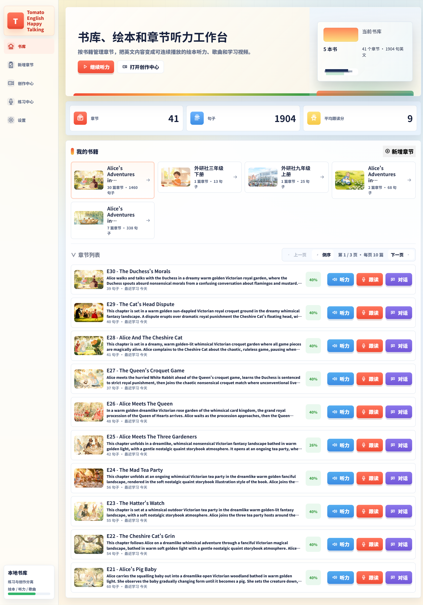
左侧导航说明
| 按钮 | 作用 |
|---|---|
| 书库 | 查看所有书籍、继续上次学习、浏览章节 |
| 新增章节 | 导入或输入新的英文内容，保存为章节 |
| 创作中心 | 为章节生成绘本、歌曲、导出视频 |
| 练习中心 | 按书籍查看章节，并快速进入听力/跟读/对话 |
| 设置 | 选择朗读声音、配置云服务、歌曲相关选项 |
首页顶部三个数字
- 章节：当前书库中一共有多少章。
- 句子：所有章节拆分成多少句英文短句。软件会自动把长段落切成适合跟读的长度。
- 平均跟读分：孩子跟读练习的平均得分，可用于观察长期进步。
4. 书库：管理书籍与章节
书库是每天学习的起点。一本书可以包含很多章节，例如《爱丽丝梦游仙境》可以按 E01、E02……分开学习。
如何开始继续学习
- 打开软件后默认进入书库。
- 点击一本书的封面卡片，进入这本书的详情页。
- 也可以直接点首页上方的 继续听力，从上次进度接着听。
章节列表
首页底部有“章节列表”，可以分页浏览所有章节。每一行通常会显示：
- 章节标题，例如 E30 - The Duchess's Morals
- 本章句子数量
- 最近学习时间
- 学习进度百分比
- 右侧快捷按钮：听力、跟读、对话、视频
5. 新增章节：导入英文内容
家长或老师可以在这里把一篇英文故事、教材段落或导入文件保存为新的学习章节。
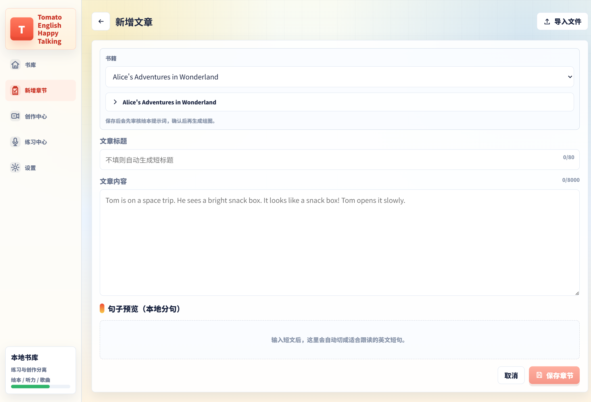
操作步骤
- 点击左侧 新增章节。
- 在“书籍”下拉框中选择已有书籍，或选择“新建书籍”并填写书名。
- 填写 文章标题。如果不填，软件会尽量自动从内容中提取短标题。
- 在 文章内容 中粘贴英文正文，也可以点右上角 导入文件 导入 `.txt` / `.md` 文件。
- 观察下方 句子预览（本地分句），确认长文已被切成适合跟读的短句。
- 内容填写完整后，点击 保存章节。
保存后会发生什么
- 章节会加入对应书籍。
- 如果开启了绘本功能，保存后通常会先弹出 绘本提示词审核 窗口，让家长确认分镜描述，再开始生成插图。
- 听力朗读不会立刻全部生成，通常需要到创作中心或首次打开听力时触发生成。
- 标准“英文一段 + 中文一段”的对照文本，软件会尽量自动识别，不必先手工拆句。
- 正文请尽量只保留故事内容，不要混入词汇表、讲解、课后练习说明。
- 一篇内容过长时，建议按章节分开保存，孩子更容易每天坚持。
6. 书籍详情：查看整本书
进入某一本书后，可以看到封面、简介、章节总数、句子总数和平均跟读分。
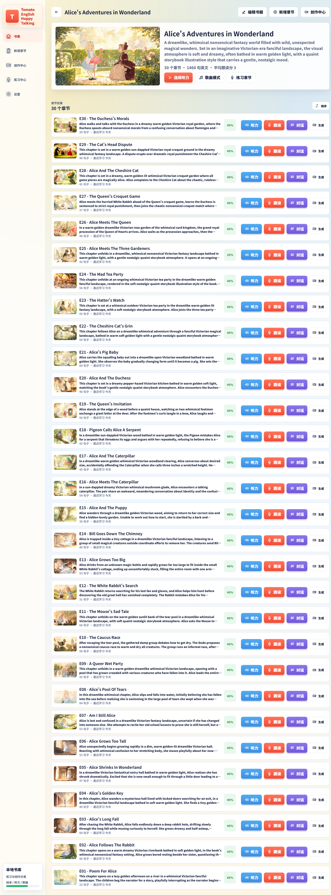
顶部三个常用按钮
| 按钮 | 用途 |
|---|---|
| 连续听力 | 从本书某一章开始，按章节顺序连续播放听力内容，适合 bedtime story 或整块阅读时间。 |
| 歌曲模式 | 进入当前章节的歌曲播放界面，用音乐方式复习。 |
| 练习章节 | 跳到练习中心，并选中这本书，方便逐章做听力/跟读/对话。 |
章节目录中的四个彩色按钮
每一章右侧通常有四个入口：
听力 跟读 对话 视频
其中“视频”用于查看或导出已生成的视频，不会直接开始跟读。
7. 听力：边看绘本边听
听力模式是最常用的入门方式。孩子可以看到与句子配套的绘本插图，同时听英文朗读，并阅读中英文字幕。
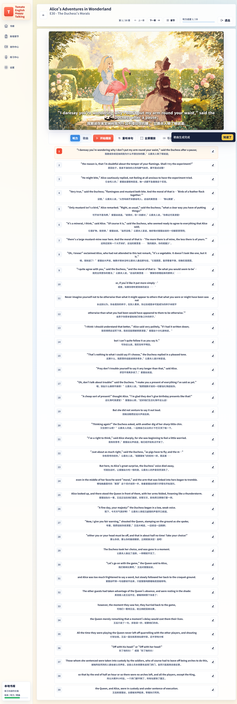
如何使用
- 从书库、书籍详情或练习中心进入某一章的 听力。
- 确认顶部显示的是当前书名和章节名。
- 点击 开始播放，软件会按句子顺序朗读。
- 想重复当前句时，点 重听本句。
- 想沉浸式观看时，点 全屏播放。
- 需要复制整章英文时，可使用 复制全文。
页面顶部信息
- 第 X / Y 章：当前是本书第几章。
- 上一章 / 下一章：在章节div间切换。
- 章节：打开章节列表抽屉，快速跳转。
- 听力进度：当前听到本章第几句。
8. 歌曲模式：用歌曲复习
歌曲模式会把章节内容配上音乐，适合孩子熟悉内容后做趣味复习。界面与听力类似，但播放的是歌曲音频和歌曲字幕。
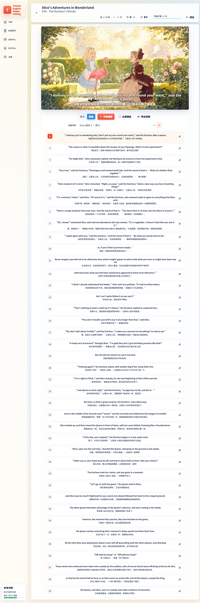
使用前先准备歌曲
歌曲不会凭空出现，需要先在创作中心生成或下载。常见方式有：
- Suno：会打开网页，需要家长自行登录 Suno 账号，由软件辅助填写歌词并创建歌曲。
- 百聆：通过阿里云百聆服务直接生成歌曲。
- ElevenLabs Music：通过 ElevenLabs 音乐服务生成歌曲。
进入歌曲模式后
- 在书籍详情点击 歌曲模式，或在播放器顶部切换到 歌曲 标签。
- 如果本章已有本地歌曲，在歌曲列表中选择一首。
- 点击 开始播放 收听。
- 可使用 全屏播放 进入沉浸式界面。
- 如果歌曲和视频素材都已准备好，可点击 导出视频 生成歌曲学习视频。
9. 跟读：听一句、读一句
跟读练习帮助孩子把“听懂”变成“说出来”。每一句都会先播放标准发音，再让孩子录音，系统会给出分数。
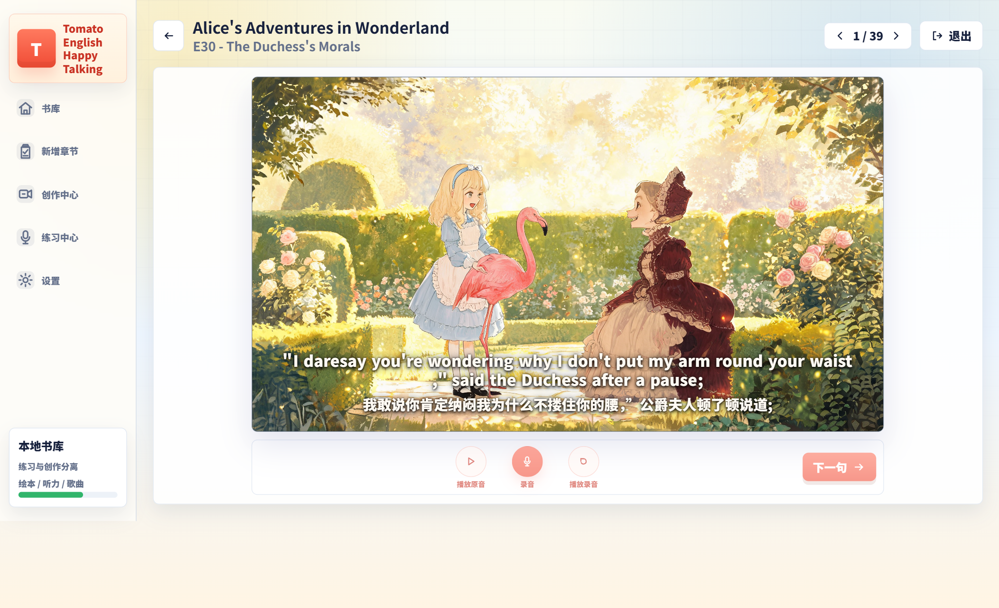
推荐练习流程
- 先完成本章听力，至少熟悉内容。
- 从练习中心或章节行点击 跟读 进入。
- 点击 播放原音，认真听当前句子。
- 点击 录音，清晰朗读同样内容。
- 录音结束后查看分数，可点 播放录音 对比自己的发音。
- 满意后点击 下一句；最后一页按钮会显示 完成。
自动停止录音
软件会根据识别到的英文内容判断孩子是否读完当前句。只有当识别结果基本覆盖整句时，才会自动停止录音并评分。 这样可以避免孩子只读最后几个词就结束。
10. 对话：和番茄助教聊天
对话模式会围绕当前章节内容进行多轮英语问答。页面中的“番茄助教”会先提问，孩子用英语回答，再继续下一轮。
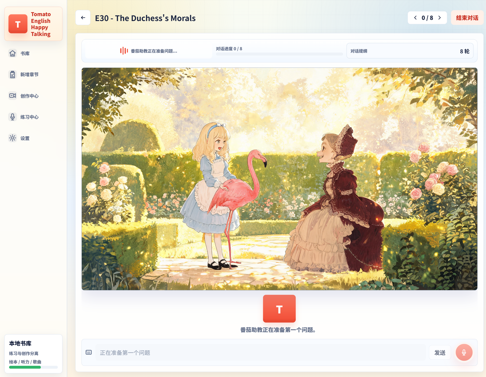
使用步骤
- 从练习中心或章节行进入 对话。
- 等待页面显示“番茄助教正在准备问题...”。
- 听助教说完后，在输入框中用英语回答，或按提示开始录音。
- 顶部会显示 对话进度 和 对话提纲，帮助孩子知道一共要进行几轮。
- 完成后点击右上角 结束对话 退出。
常见状态提示
| 提示 | 含义 |
|---|---|
| 番茄助教正在说，认真听。 | 请先听完，不要急着回答。 |
| 轮到你说英语啦。 | 现在可以输入或录音回答。 |
| 正在听你说英语。 | 系统正在识别孩子的语音。 |
| 番茄助教正在想答案。 | 请稍等，助教正在生成下一轮问题或反馈。 |
11. 创作中心：生成绘本、歌曲、视频
创作中心主要供家长或老师准备学习资料。学生平时学习时，更多使用的是书库、听力和练习中心。
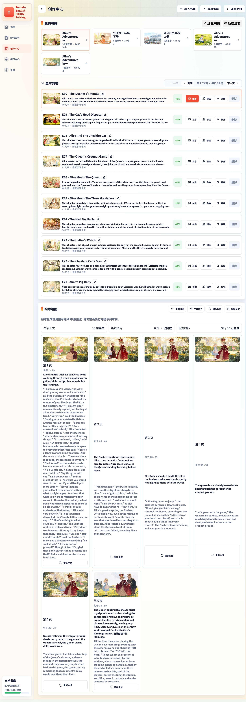
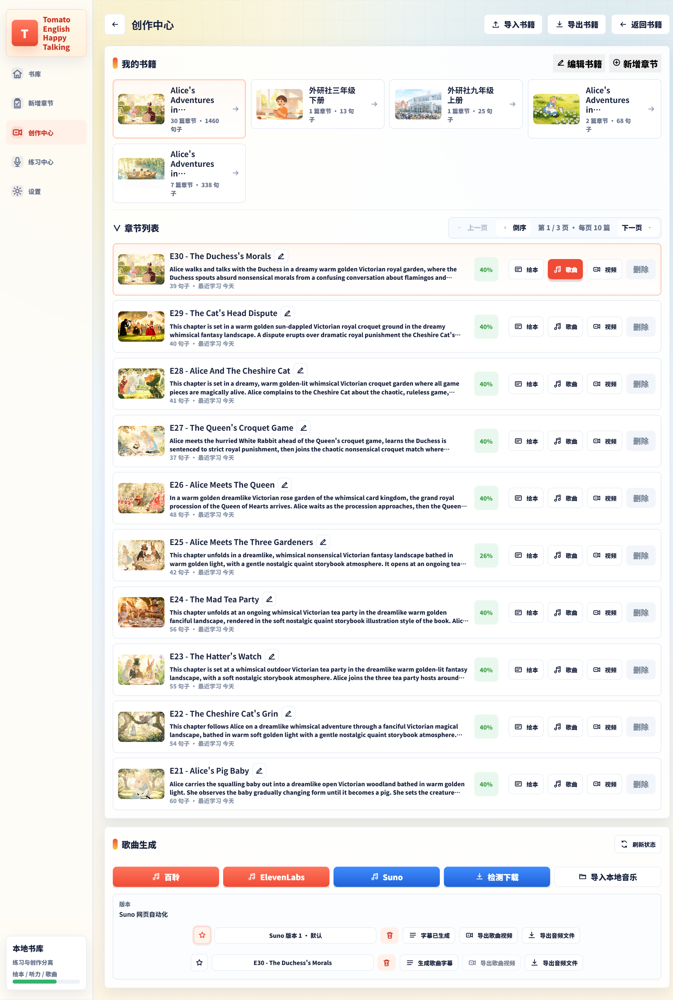
三个标签页
| 标签 | 作用 | 适合什么时候用 |
|---|---|---|
| 绘本 | 查看绘本生成状态、生成听力、重新生成绘本图 | 新章节保存后，或插图效果不满意时 |
| 歌曲 | 生成歌曲、检测下载 Suno 歌曲、管理本地歌曲版本 | 孩子熟悉原文后，想做趣味复习时 |
| 视频导出 | 导出听力视频或歌曲视频 | 想分享到平板、电视或课堂展示时 |
绘本生成流程（家长操作）
- 在创作中心选中书籍和章节。
- 进入 绘本 标签，查看当前页数和状态。
- 如果是新章节，先完成 绘本提示词审核，检查章节描述和分镜内容。
- 确认后再提交生成。整章绘本图可能需要较长时间，请耐心等待。
- 生成完成后，再到听力模式查看效果。
生成听力
如果某一章还没有朗读音频，可在绘本页点击 生成听力。 若之前已经生成过，软件会询问是否覆盖原内容。覆盖会重新提交语音合成，一般只有在更换声音或修改句子后才需要。
歌曲相关按钮说明
- 百聆 / ElevenLabs / Suno：三种不同的歌曲生成方式。
- 确认创建歌曲：Suno 流程中，歌词和风格填好后由家长确认创建。
- 检测下载：到 Suno 网站手动创建歌曲后，回到软件检测并下载未保存版本。
12. 练习中心：集中练习入口
如果孩子已经知道今天要学哪本书，练习中心是最方便的入口。它按书籍列出章节，并直接提供听力、跟读、对话、视频四个按钮。
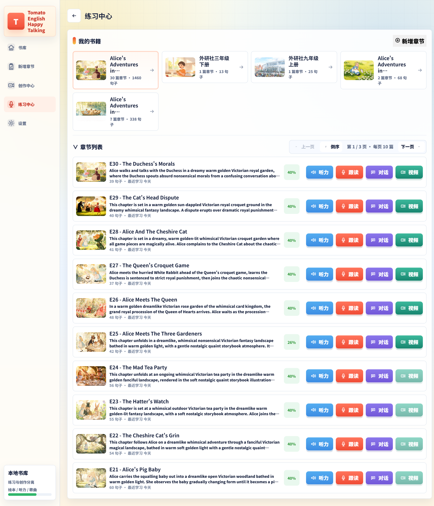
推荐使用方式
- 点击左侧 练习中心。
- 在“我的书箱”中选择今天要学的书。
- 在章节列表中找到目标章节。
- 按学习顺序依次使用：
- 第一次学：点 听力
- 第二遍练嘴：点 跟读
- 第三遍检验：点 对话
13. 设置：声音与云服务
设置页主要分两部分：一是选择孩子喜欢的英语朗读声音，二是配置云服务。普通用户最常使用的是“选择番茄助教的发音”。
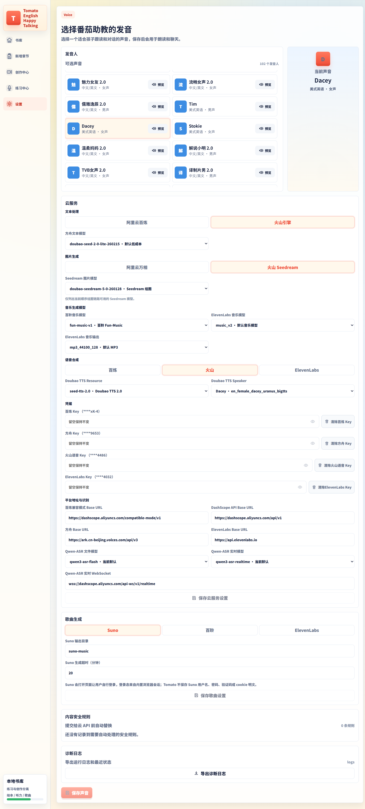
选择朗读声音
- 进入 设置。
- 在“可选声音”列表中浏览不同发音人。
- 点击 预览 试听效果。
- 选中合适的声音后，点击保存。
- 保存后，听力、跟读和对话中的英语朗读都会使用这个声音。
云服务配置（家长操作）
如果您是第一次使用，需要由家长或管理员配置云服务密钥。常见分区包括：
- 文本处理：用于标题生成、对话提纲、绘本分镜规划等。
- 图片生成：用于生成绘本插图。
- 语音合成：用于听力朗读、助教说话。
- 音乐生成：用于百聆等平台生成歌曲。
软件支持在不同平台之间切换，例如阿里云百炼、火山引擎、ElevenLabs。请根据您已有的账号和套餐选择，不需要把所有平台都配置一遍。
歌曲设置
- Suno 输出目录：指定 Suno 歌曲保存位置。
- Suno 生成超时（分钟）：等待网页生成歌曲的最长时间。
- 百聆音乐模型：使用阿里云百聆时的歌曲模型。
14. 给家长与学生的学习建议
给家长
- 一本书不要一次导入太多章节，按周计划分批添加，更容易坚持。
- 新章节建议顺序：先保存 → 审核绘本 → 生成听力 → 让孩子开始听 → 再做跟读和对话。
- 跟读分数用于观察趋势，不必要求每句都满分，重点是鼓励孩子完整读完。
- 对话环节允许孩子用简单句回答，不要要求一次就说得很复杂。
- 若生成失败，先检查网络、账号额度和设置页密钥，再重试。
给学生
- 第一次学新章节时，先完整听一遍，不要急着录音。
- 跟读时看着英文句子，尽量模仿语音语调，而不是只求快。
- 不会读的单词，可以先点“播放原音”多听几次。
- 对话时听不懂，可以回到听力模式重听相关段落。
- 歌曲模式适合复习，不适合第一次接触新课文。
一套简单学习流程
| 步骤 | 功能 | 时间建议 |
|---|---|---|
| 第 1 步 | 听力 1 遍 | 10–15 分钟 |
| 第 2 步 | 跟读重点句或整章 | 10–20 分钟 |
| 第 3 步 | 对话 1 轮 | 5–10 分钟 |
| 第 4 步 | 歌曲或视频复习 | 可选，5 分钟 |
15. 常见问题
为什么保存章节后看不到图片？
绘本图需要单独生成。新章节保存后，通常会先进入“绘本提示词审核”，确认后才会开始生成整章插图。生成期间请耐心等待，不要重复提交。
为什么听力播放没有声音？
常见原因有：该章尚未生成听力音频、系统音量被静音、正在生成中、或云服务密钥未配置。请先到创作中心查看“听力材料”状态。
跟读录音没有反应怎么办？
请检查电脑或平板是否允许麦克风权限，尽量使用耳机，并在安静环境下重试。如果识别结果太短，系统不会立刻结束，请尽量读完一整句。
对话一直显示“正在准备”怎么办？
这通常表示网络或服务正在初始化。请确认网络正常、设置页云服务可用，并稍等片刻后重试。
Suno 歌曲怎么用？
点击生成 Suno 歌曲后，软件会打开 Suno 网页。家长需要先自行登录 Suno，软件会帮助填写歌词和风格。创建完成后，可回到软件点击“检测下载”把歌曲保存到本地。
可以离线使用吗？
已经生成好的绘本、朗读、歌曲和对话记录可以离线反复使用；但首次生成新内容、进行新的 AI 对话、重新合成语音时仍需要联网。
换电脑后资料还在吗？
学习记录和生成素材保存在本机程序数据目录中。换设备前请整体备份，不要只复制 exe 文件。
中文翻译从哪里来？
如果导入的是中英对照文本，软件会优先使用原文中的中文翻译；如果没有，部分字幕可能为空，需要家长重新导入带中文对照的内容，或在后续版本中补充翻译。